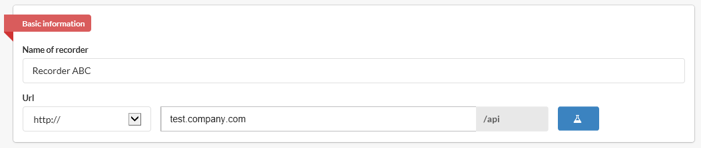
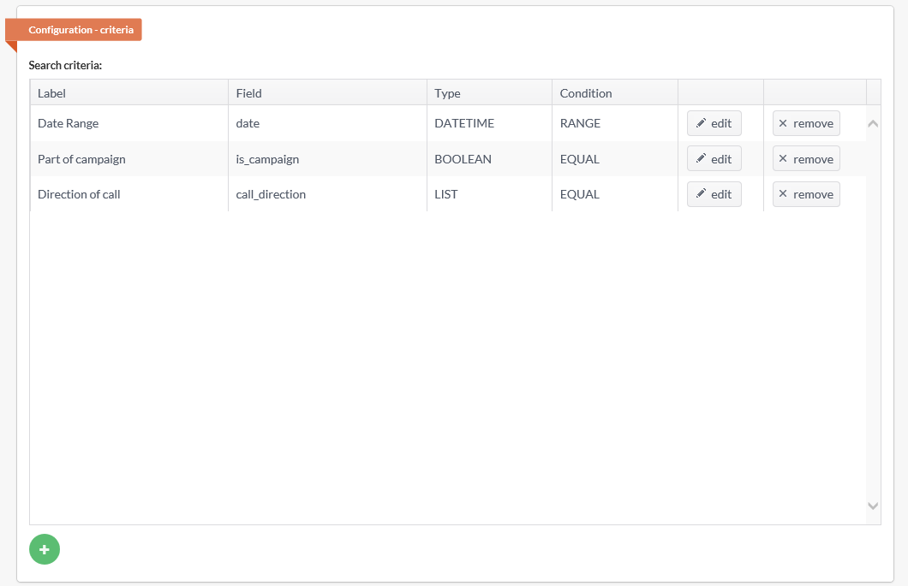
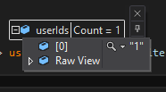
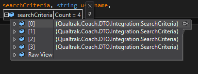

Test your Connector¶
Here, we will walk you though how to test your connector from our Integratio Tool [1] . You will need to host this end point. You can do this though IIS and allowing port 80 through your firewall. You IP address or domain name will be required by our Integration Tool.
Next, you will be asked for the media player you wish to use.
Search Criteria Matrix¶
Within Coach you have several different input types data types available to you that best describes the data you want to filter on.
See Search Criteria Matrix document for the data types and their conditions.
For more information on these data types see Data Types.
Build search criteria¶
You can use our Integration Tool to construct your recorder’s search criteria.
Here, you will see that we have defined the search criteria as having 3 fields; Date Range, Part of campaign and Direction of call.
Test Users¶
Open you connector code and place breakpoint just inside of the GetUsers method.
Whem you press the Test Users button you get presented with this modal and you press OK
It now hits your breakpoint. You will see 1000 is being passed as the tenantCode. You will see null for both username and password as the Integration Tool is not passing values for those.
Test Recordings¶
Open you connector code and place breakpoint just inside of the GetRecordingsForUsers method.
Whem you press the Test Media button you get presented with this modal and you press OK
It now hits your breakpoint. You first see a limit value. This is the maximum calls that Coach wants per agent. You will see 1000 is being passed as the tenantCode. Next you see that only 1 **userId* is passed. Following this, you see that 4 search criteria have been passed. You will see `` `` for both username and password as the Integration Tool is not passing values for those.
There is only one user passed in
Here we see a 4 criteria listed
All criteria is expanded. Each criteria starts with an identifier, e.g. date_0
This is a description of the critiera being passed to your method:
- Date Range
- The first 2 criteria here form the date range. These come with conditions of GreaterthanEqual and LessThanEqual. As these criteria share the same identifier
date_0this denotes they refer to the same data input. - Part of campaign
- The next criteria identifier is
is_campaign_0. Here we see that the condition is Equal and that we are passing a boolean value. In this case, the Integration Tool is passingTrue. - Direction of call
- The last criteria that is passed has the identifier of
call_direction_0. Again, this condition is Equal and the value being passed isI.
Footnotes
| [1] | http://dev.qualtrak.com/Cit - developer portal |